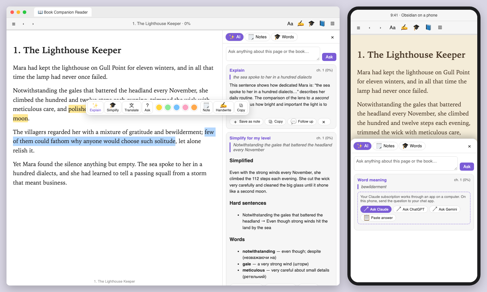
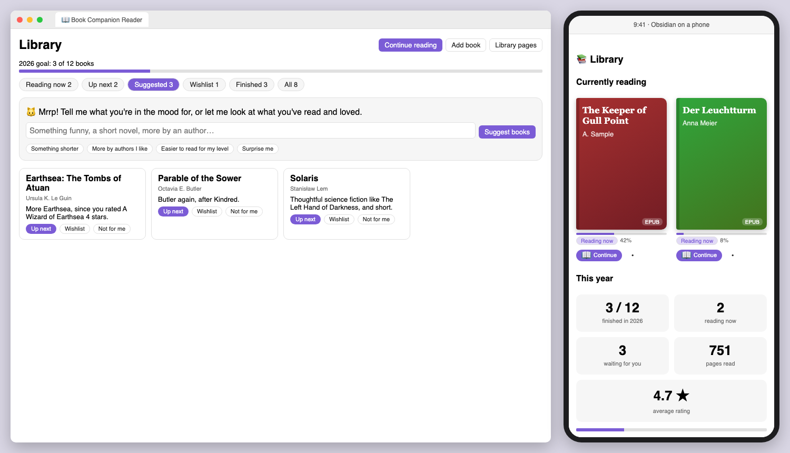
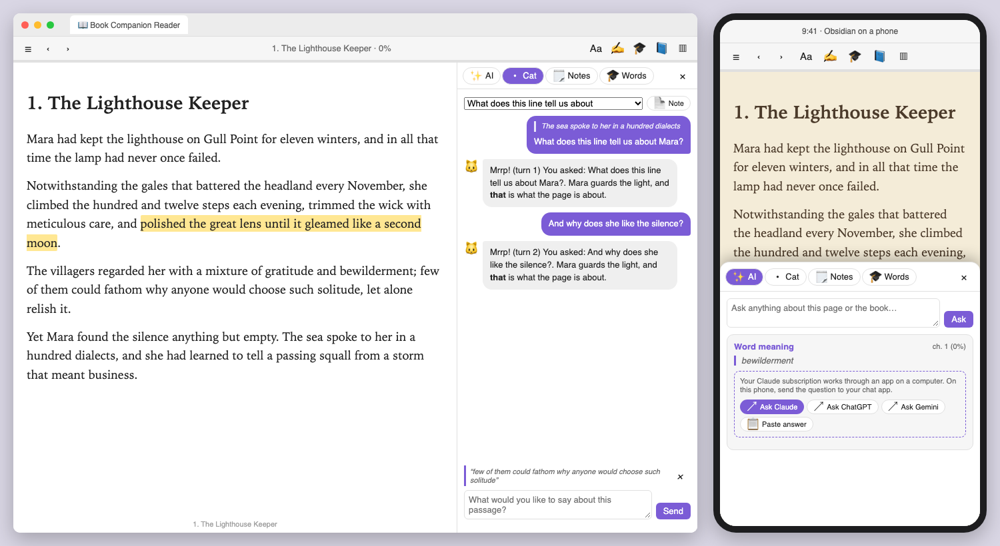
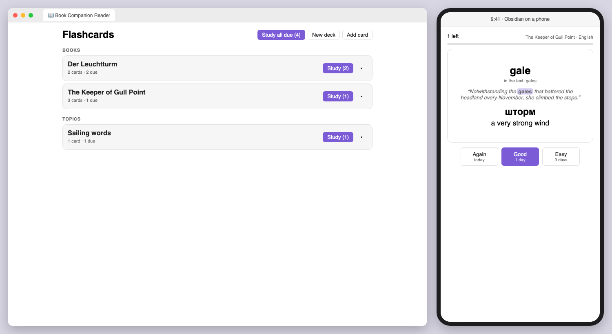
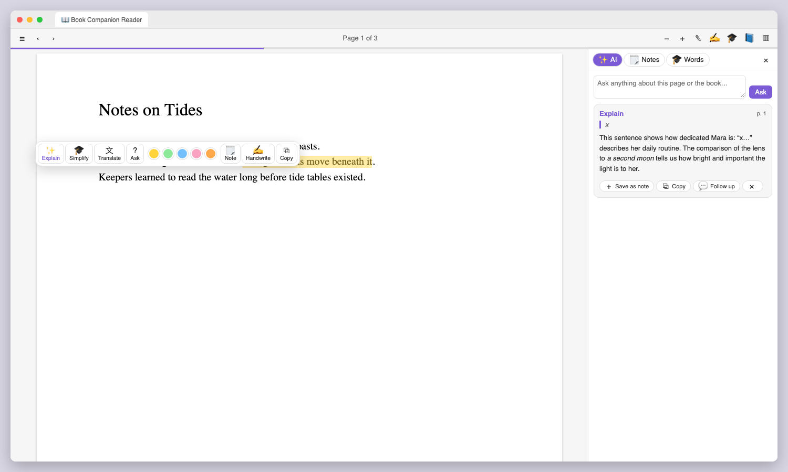

📖
PDF and EPUB, one reader
EPUBs turn like pages (tap the edges or swipe) or scroll. PDFs have selectable text, zoom and an outline. Sepia and dark paper, font size, and your place is always remembered.
Obsidian plugin · desktop & mobile · free & open source
A PDF and EPUB reader for Obsidian with an AI companion, like the one on an e-reader but tuned to your language level. Select a word or a sentence to have it explained or rewritten in simpler words. Your highlights, notes, vocabulary and handwriting become a small knowledge system around each book, right in your vault.
Works with the AI subscription you already have: Claude, ChatGPT or Gemini. API keys and local models work too.

EPUBs turn like pages (tap the edges or swipe) or scroll. PDFs have selectable text, zoom and an outline. Sepia and dark paper, font size, and your place is always remembered.
Explain, Simplify, Word meaning, Translate or ask your own question about any passage. The AI sees the surrounding text, so answers fit the book. Ask follow-up questions in the same thread.
Tell it your native language, the language you're learning and your level, A1 to C2. Hard sentences get simpler versions, and difficult words get short definitions and translations.
Each book gets a folder and a book page listing its highlights, notes, handwriting, vocabulary and saved AI answers. Every entry links back to the exact page.
Write straight on PDF pages with a pen, highlighter and eraser, or start a handwritten note on lined or dotted paper. Notes are saved as SVG you can open and edit later. Supports Apple Pencil and other styluses, with a pen-only mode that ignores your palm.
Built for Obsidian mobile from the start: big touch targets, swipe page turns, a bottom-sheet companion. Your progress and notes travel with your vault.
Tap Card on a word: it is saved with the sentence from the book, its translation and an example. Group cards in book and topic decks and practise them with built-in spaced repetition.
All your PDFs and EPUBs on one shelf with generated covers, reading progress, highlight and word counts, and a search box.
Pick a novel in the language you're learning. When a sentence is too hard, select it and tap Simplify:
Study this page does the same for everything on screen: a short summary, the hard sentences and up to 12 words to learn. Explanations come in simple words of the language you're learning, or in your native language. You choose.
You select
Notwithstanding the gales that battered the headland every November, she climbed the hundred and twelve steps each evening…
Simplified for B1
Even with the strong winds every November, she climbed the 112 steps each evening…
Words
notwithstanding: even though; despite
gale: a very strong wind
meticulous: very careful about small details
See everything you read, plan to read and want to read, on shelves, with books that are files and books that aren't.
Everything is stored in your book pages as plain notes, so it stays yours and stays queryable.

The little cat on the pile of books isn't just a logo. Open the Cat tab and talk about what you're reading, like with a friend from a book club who is reading along.
Every discussion is saved as a note in the book's folder, linked from the book page, with links back to the pages you talked about.


Select a word and tap Card. The AI gives its dictionary form, a translation, a simple meaning and an example, and the card keeps the sentence it came from with the word marked, plus a link back to the page.
word :: meaning notes for the Spaced Repetition pluginLearning German and English at once? Give each language its own level, such as German B1 and English C1. The reader picks the right one from the book.
Claude Pro/Max through Claude Code, ChatGPT Plus/Pro through Codex, or Gemini through the Gemini CLI. Sign in once in a terminal, and the reader asks through that app. You need no API key and pay no extra bill.
Tap Ask Claude, Ask ChatGPT or Ask Gemini. The app opens with your question and the book's context already filled in. Copy the answer and tap Paste answer, and it's saved with the book.
Anthropic, OpenAI and OpenRouter keys, Ollama on your own computer, or any OpenAI-compatible server. Requests go only to the service you choose.
Better together
Typed Graph turns Obsidian notes into a typed property graph that you can query with openCypher. With both plugins installed, the reader writes typed notes:
Book, written_by its Author (Typed Graph's library ontology)ReadingNote + Quote, with quoted_from and the pageExplanations that explains the book, with the action and the placeMATCH (n)-[r:note_on|explains]->(b:Book)
RETURN b.title AS book, count(n) AS notes
ORDER BY notes DESCThen the graph view shows each book with everything you thought about it. Install Typed Graph and typed notes turn on by themselves.

.epub, or a PDF's menu → Open in Book Reader.Manual install: copy main.js, manifest.json and styles.css from the latest release into <vault>/.obsidian/plugins/book-companion-reader/. Beta builds: BRAT → Volland/book-companion-reader.
Books, positions, highlights and notes stay in your vault and the plugin's settings. Nothing is uploaded on its own.
The selected text and a little surrounding context go to the AI service you picked, and only when you press a button.
MIT licensed. The code, the tests and how it all works are on GitHub.